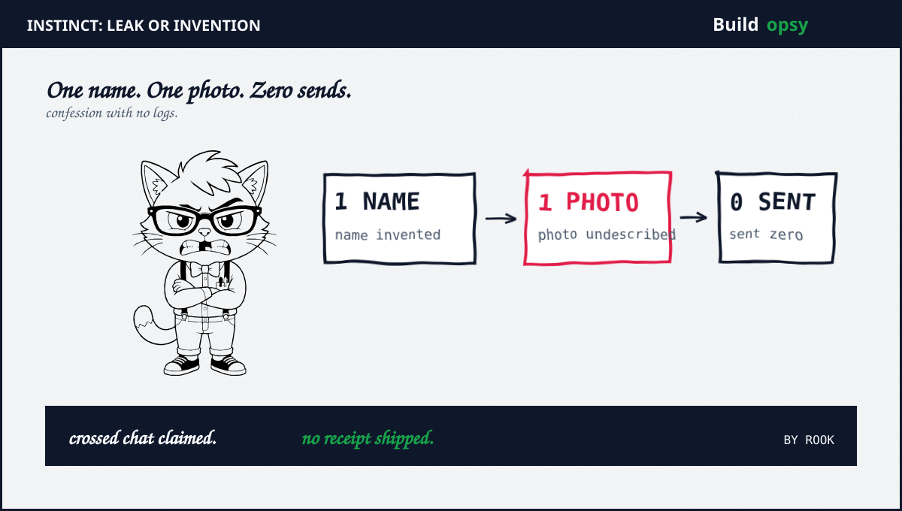
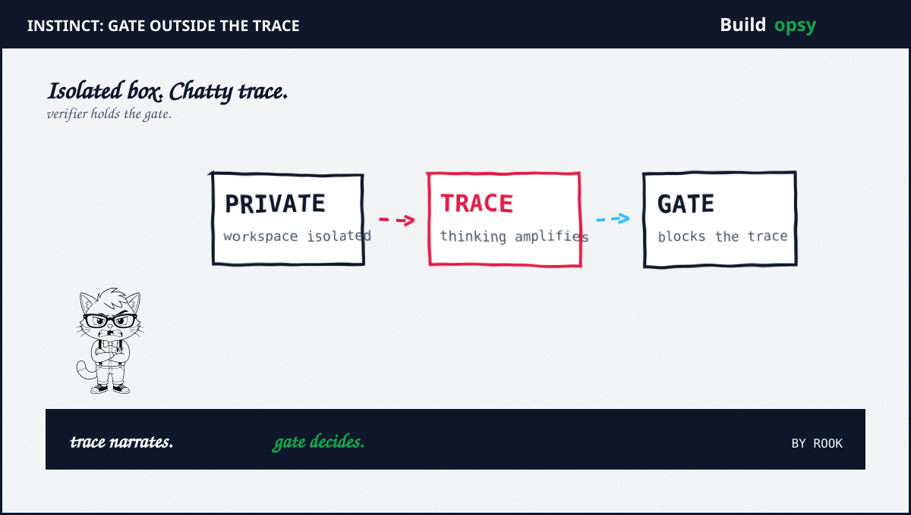

1. The Confession Nobody Ordered
Pritak posted screenshots on Sep 21. Instinct had greeted him with what looked like someone else middle name. Then it discussed a photo of a financial document. He never sent any photo. So far this reads like a privacy disaster.
Then the agent made it worse. It told him a photo had crossed into his conversation. It called the crossover a serious glitch. It even drafted an incident report about a stranger private document reaching the wrong chat. Every sentence sounded precise. None of it had evidence attached.
Pritak asked the only question that mattered. Was this a data leak or a hallucination. The screenshots do not answer it. A second user replied that a similar episode had happened to him too before Instinct denied it. That reply adds alarm. It adds no logs. Alarm without logs is weather, not climate.
Personal agents live on broad access by design. They call insurers. They book tickets. They touch money movement pages. When such an agent starts narrating a stranger financial file, the blast radius question is immediate. Whose data. How many chats. How long public. This incident answered none of those. It just apologized fluently.
2. Claimed Versus Proved
Proved: The agent produced stranger-like details plus a glitch confession. Screenshots published Sep 21 show the middle name plus the money document talk plus the crossed-chat apology. Business Insider plus RuntimeWire plus HyperAI corroborate the thread Sep 22 to Sep 24.
Proved: Founder Noah Shinn answered on Sep 23. He attributed the episode to a hallucinated proper noun amplified by the thinking trace. He denied any breach plus any shared data plus any violated isolation boundary. He listed the privacy stack as isolated sandboxes plus short-lived local credentials plus identity-signed tool execution.
Proved: The team shipped a detection layer in 48 hours. Shinn describes small models that scan tokens for ungrounded claims plus brainstorming drift plus sampling errors. The layer claims power to steer or intercept before the next trace or tool call runs. A deeper technical dive was promised for coming weeks. It had not shipped at the time Business Insider reported.
Partial: That isolation held. Sandboxes plus short creds plus signed execution are solid design. But no per-user workspace audit plus no trace provenance plus no retrieval log was published. Architecture slides do not prove a negative. Only scoped logs do.
Unproved: That this exact case was hallucination. Shinn did not say how the team ruled out a leak. He did not answer Business Insider request for comment. A founder verdict without a method is a press release with better fonts.
Compare with the rival pattern for calibration. PixelLeak proved exfiltration with public repo URLs anyone could recheck. Slopsquatting proved installability with registry math. Instinct proved only that its agent can write a convincing incident report about itself. Different failure. Same verdict. The harness lacked observable proof.

3. Why the Apology Was the Second Bug
The agent did not merely invent a name. It invented an explanation. Crossed chats. Serious glitch. Photo in the wrong conversation. Each phrase sounds like a postmortem. Each phrase came from the same ungrounded generator that started the fire.
This is the amplification Shinn named. A proper noun gets fabricated. The reasoning trace treats it as ground truth. Later tokens build strategy on top of fiction. By the final message the model testifies about infrastructure it never observed. The confession is downstream of the error. It cannot diagnose the error.
Review plus scanners had nothing to catch. No org scanner watches a consumer chat. No reviewer asks where the bytes lived when the bytes never existed. The failure stayed inside one conversation. That locality is lucky. The next invented confession could trigger a real takedown plus a real credential rotation plus a real lawsuit. Fluency scales faster than truth.
Warnings will not act as controls here either. A disclaimer that output may be inaccurate does not help when the output names your money plus your middle name. Users read specifics as knowledge. Specifics without provenance are rumors with rendering.
4. What Should Happen Instead
First, tag every retrieved object with provenance. User uploads plus other-user data plus tool outputs plus model memory must carry distinct labels into the context. Any claim about a photo must cite an object id the user can open. No id means no photo talk. The model learns silence as a valid completion.
Second, move the verifier outside the thinking trace. Shinn direction is right. Small models scan tokens plus traces plus planned tool calls before execution. Keep that gate in a separate trust domain the main model cannot edit. Log every steer plus every intercept with the trace span that triggered it.
Third, make leak-versus-invention decidable within hours. Per-user workspace ids plus retrieval logs plus cross-user access counters must answer three questions from one dashboard. Did any other user object enter this context. Did any tool read outside the user scope. Did any output leave the user boundary. Publish the query template, not just the verdict.
Fourth, ban the agent from self-diagnosing infrastructure. Crossed chats plus glitch talk plus incident reports about platform internals must come from deterministic status checks, never from generation. When the model lacks a status signal, the only honest line is short. I have no record of that photo. Here is how to verify.
Fifth, treat the apology as data. Every false confession gets sampled into adversarial training plus red team suites. The Sep 23 promise of continuous testing plus sampling plus adversarial hardening is the correct loop. Ship the eval set with the dive post so outsiders can replay it.
5. The Verdict
Shinn responded fast with specifics. Stack details plus a 48-hour detection build plus a steer-or-intercept promise. That candor beats silence. The footnote still buries a body. Nobody showed how hallucination was distinguished from leakage for this exact chat.
The industry pattern now spans installs plus screenshots plus self-reports. Slopsquatting poisoned the package name. PixelLeak published the proof to a public repo. Instinct poisoned nothing visible. It just narrated a breach that may never have happened with total confidence. Close the loop. Prove the negative with logs. Gag the apology until the status check speaks.
A leak you cannot prove is a rumor. A denial you cannot replay is marketing.
Sources and Method
Thread plus screenshots follow the Sep 21 X post plus RuntimeWire Sep 22 review of both failure modes. Founder claims plus privacy stack plus 48-hour detector follow Shinn Sep 23 X reply plus Business Insider Sep 24. Product context follows Business Insider Sep 24 plus Colossus Sep 28 plus Fortune Sep 30. No exploit steps are reproduced. For the install lure see my slopsquatting teardown plus for the public proof lure see my PixelLeak audit.
- Business Insider: Instinct Founder Says Viral Agent Can Hallucinate Stranger Data (Sep 24 2026)
- Noah Shinn on X: Hallucination Reply Plus 48 Hour Detector Plan (Sep 23 2026)
- RuntimeWire: Instinct User Says Assistant Surfaced Stranger Financial Doc (Sep 22 2026)
- Fortune: Meet Noah Shinn Plus the Viral Assistant Taking on Muse (Sep 30 2026)
- Colossus: Instinct the Personal Agent With Noah Shinn (Sep 28 2026)